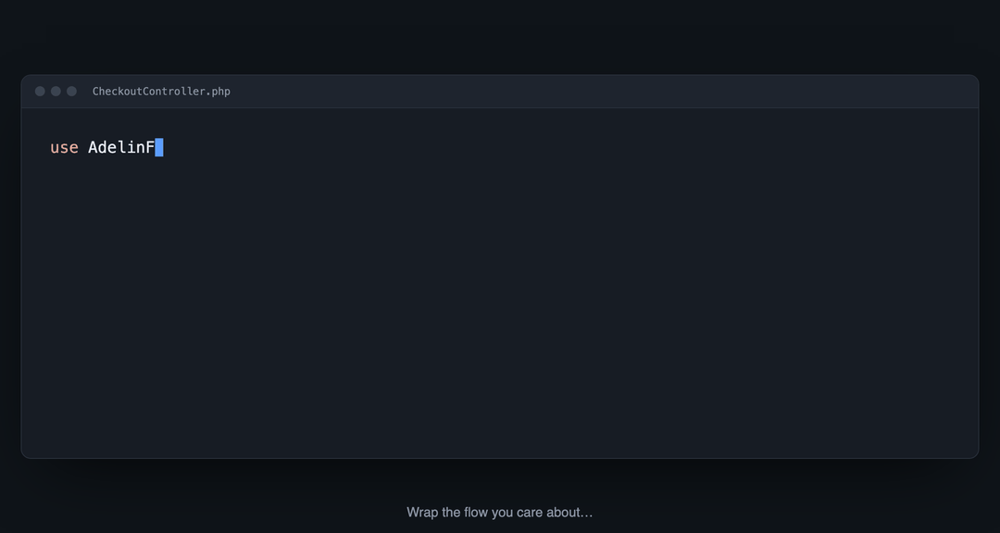

Wrap any block of code in a span. NestedFlowTracker times it and stores it as a tree — in your database. No collectors, no external backend, no data leaving your app. Works in production.

There's a gap between dev tooling and full observability stacks: production-safe tracing of your business logic, kept in your own database.
Great in development, but it traces framework internals — queries, jobs, requests — not the steps of your flows.
Powerful, but it wants collectors and a backend you have to stand up and operate before the first trace.
Traces go to a third-party cloud and you're priced per event. Yours stay in a table you own and can query.
Flow::span('checkout', fn () => …) — closures auto-close and are exception-safe, so a span can't leak.
Nested spans become children; one flow can cross services via a shared trace id (W3C traceparent).
Enable the built-in viewer (FLOW_VIEWER=true) and open /flow — a collapsible timed tree with failed spans highlighted. No build step.
// wrap the flow you care about
use AdelinFeraru\NestedFlowTracker\Laravel\Facades\Flow;
$order = Flow::span('checkout', function () use ($cart) {
Flow::span('charge card', fn () => $gateway->charge($cart));
Flow::span('reserve stock', fn () => $inventory->reserve($cart));
return Flow::span('create order', fn () => Order::create($cart));
});
checkout ................. 312ms ├─ charge card ........... 188ms ← there it is ├─ reserve stock ......... 41ms └─ create order .......... 83ms
Production-safe, business-flow level, and your data never leaves your database.
No collector, no separate backend. A Composer package and your existing database.
Records only what you wrap; HTTP & queue auto-instrumentation is opt-in. Disabled, the overhead is ~2µs per span.
You decide what's a span — not framework internals you didn't ask about.
Spans live in your database. Nothing is sent to a third party.
W3C trace-context across services + an optional OpenTelemetry export — scale up without being forced onto OTel infra.
database · log · null · otel drivers, plus a JSON API and the built-in viewer.
Require the package, publish the migration, wrap a span, open /flow.
composer require adelinferaru/nestedflowtracker
php artisan vendor:publish --tag="flow-migrations"
php artisan migrate
# then set FLOW_VIEWER=true and visit /flow